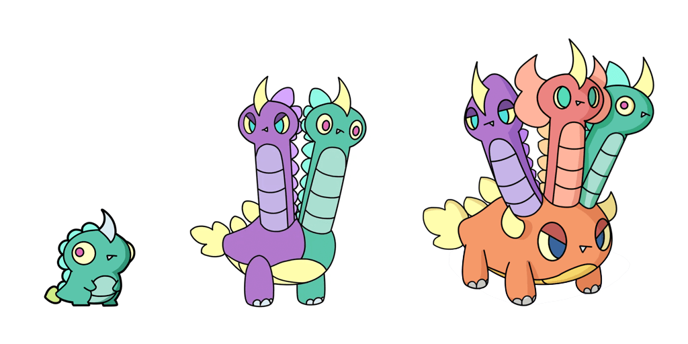
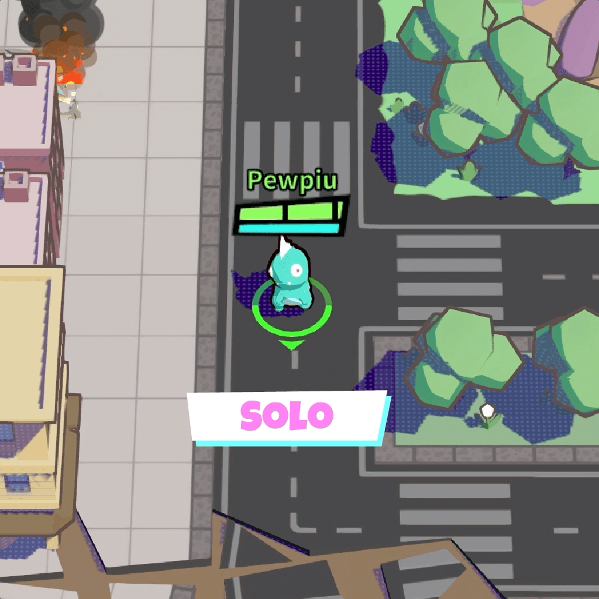
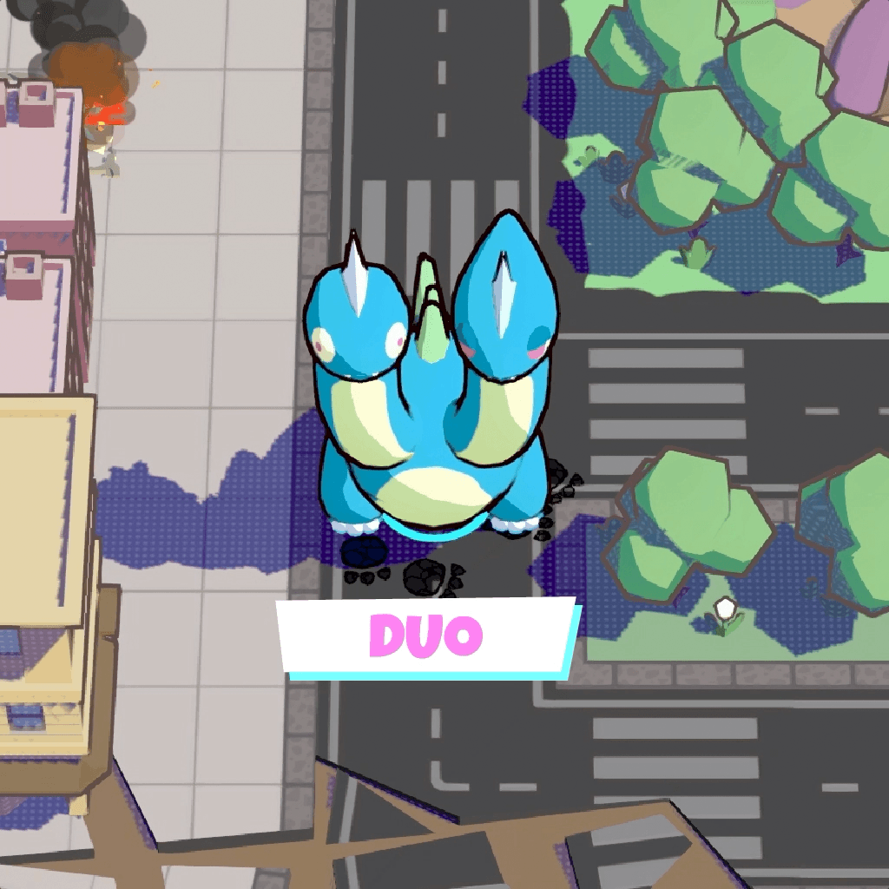
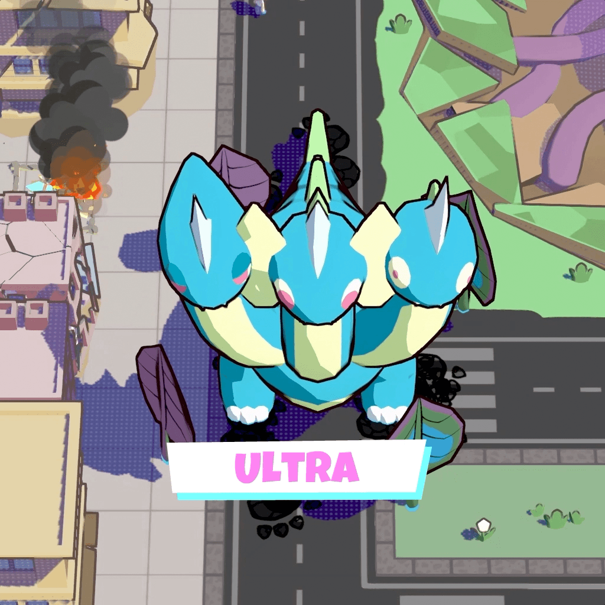

1.2 Gido 的三種形態
從小到超巨大
從小 Gido 合體成大 Gido，這就是破壞的浪漫！

在這場大戰裡，你可以以三種形態登場：
單體
單體 Gido
最基礎的你，動作靈活，靠吃路人累積雙合能量。

雙合
雙合 Gido
兩名玩家融合而成。體型變大，隨便走走都能踩爛房子！

超合
超合 Gido
四人大合體！本局最強形態，自帶霸體不怕揍，終極兵器。

兩隊怪獸大戰，先把敵方的「核心根脈」打爆的一方獲勝！
但要拆核心根脈，必須先清掉敵方的所有守衛花，核心根脈才會解除封印。
邊破壞城市、邊吃路人讓自己變強，再跟隊友合體成超大巨獸——這就是 Gido Gido 的一切！

在這場大戰裡，你可以以三種形態登場：
最基礎的你，動作靈活，靠吃路人累積雙合能量。

兩名玩家融合而成。體型變大，隨便走走都能踩爛房子！

四人大合體！本局最強形態，自帶霸體不怕揍，終極兵器。

使用搖桿或方向鍵移動你的小短腿。如果在移動中按下衝刺（Dash），就能快速拉開距離或是貼近敵人。善用衝刺，你就能馬上取消攻擊動作的破綻、溜之大吉或繼續追擊！
普通攻擊連按最多可打出多段連擊，建築、路人、敵人全都能打！盡情搞破壞吧！
每個 Gido 都有自己的專屬絕活，但使用技能需要消耗「精力值」。隨時注意精力條喔！
每隻 Gido 除了擁有各自的專屬技能外，體內還藏著「融合因子」！
當你們合體成雙合 Gido 或超合 Gido 時，這些因子就會轉化為合成獸的被動天賦，讓你們的大怪獸獨一無二！
街上的路人就是你的免費補給！建築被摧毀時也會生成一批路人往四方逃竄，靠近就會自動吃掉他們並增加「雙合能量」。
雙合能量分3 個等級，每升一級體型逐漸變大，並強化血量、攻擊力、Dash 冷卻及精力值上限。
吃敵方單體獸的屍體也能獲取大量雙合能量，還可以吃掉隊友防止敵方吃掉同伴。
雙合能量達到 100% 時，還能單挑守衛花，甚至可以直接衝破路邊的樹和巴士！
雙合能量累積到100%，就可以發出融合波，準備合體成雙合 Gido！
按住融合鍵展開黃色融合波進入準融合狀態，隊友進到圈內就會觸發融合。
恭喜成為雙合 Gido！體型更大，拆塔更快，而且走路踩踏都會讓建築物受傷。這時候你們的首要任務就是一起累積「超合能量」。
雙合 Gido 狀態下，每秒會自動累積超合能量。擊殺敵方或摧毀建築可以累積得更快！
能量滿後，全隊任何 Gido 都能按住超融合鍵發出紅色融合波，其他隊友靠近後就能融合為超合 Gido！
體型超級巨大，四肢同時對建築造成踩踏傷害，走路就能拆塔！
攻擊力與巨獸能源全面提升，是終局破壞力最強的形態。趁著這個最強型態，直接碾壓過去把對手核心根脈給掀了吧！
合成獸由所有成員共同操控移動方向，畫面上有箭頭顯示每人的輸入方向。
單獨一人控制時最快速；兩人以上同時輸入，推力就會平分。
合成獸作用期間會持續消耗「巨獸能源」，受傷也會導致能源消耗加快，只要能源用盡就會自動解體。
合體狀態下，成員按住技能鍵就可以開始「集氣」累積脈衝值——參與的人越多，集氣越快！
脈衝值集滿後組合技自動發動，並在放完絕招後直接解體。集氣中不能移動和攻擊，部分人集氣、其他人繼續防守也是一種策略！若敵方猛攻，也可以提前中止組合技。
解體後 Gido 會進入短暫「耗竭狀態」，精力歸零、無法展開黃色融合波，等狀態結束再重整旗鼓。
己方守衛花會幫單體獸補血（合成獸太胖了補不到）。
而敵方守衛花攻擊超痛，還會優先鎖定你！建議讓血多的合益獸去扛傷害並強拆它。
當敵方守衛花全毀，核心根脈就會甦醒並發射致命雷射，這時就是一口氣推平它們的好機會！
站在己方的溫泉裡能持續回血並解除中毒狀態。
走進草叢就能完美隱身，非常適合埋伏。
但也別忘了，龐大的合成獸躲草叢是絕對藏不住的啦！
關卡中有不同類型的建築，破壞它們可以獲得不同的資源！
通常位於城市中央，破壞後出現大量路人並掉落大量道具。
外型特別或有動態裝飾，破壞後掉落道具。
破壞後出現較多路人，中機率掉落道具。
破壞後出現少量路人，低機率掉落道具。
地圖上會不定期從地底長出「神秘種子」，破壞後掉落道具！
畫面角落的小地圖會顯示隊友位置、敵方動態和守衛花狀態。多看小地圖，掌握戰局才不會迷路或被圍毆！
【神秘種子】中後期道具最主要的來源，破壞後掉落。
【建築摧毀】建築倒塌時有機率彈出道具，看到就趕快過去搶！
【怪獸死亡】單體 Gido 死亡時，身上持有的主動道具會強制掉落在原地，快去撿！
主動道具撿起來會存在口袋裡，按住瞄準放開就能投擲使用。
被動道具只要撿到就會立刻生效，並賦予你短暫的強大增益。
丟到指定位置，在落點持續進行範圍補血，分多次回復。對範圍內所有友方角色皆有效，拆塔時丟在腳下最划算！
丟至指定位置，落地後爆炸造成範圍傷害。碰到敵方建築會直接爆炸；若是碰到我方建築則安全落地不爆。
跟 Bomato 的炸彈不一樣，這顆不會隱形。
瞄準範圍可覆蓋整張地圖！選好落點，隕石從天而降造成超大範圍傷害。稀有度最高，效果也最強——看到就先拿，時機到了再丟！
撿到立刻回復血量，簡單快速。殘血時看到就衝過去撿吧！
撿到後，一段時間內使用技能「完全不消耗精力」！是衝進敵陣瘋狂丟技能輸出的最佳幫手。
撿到後一段時間內進入完全無敵狀態，且移動速度大幅提升！無敵期間任何傷害都是 0，是衝塔或開戰的神器。
持有時若不幸死亡：你會立刻在原地復活，不扣雙合能量、不計死亡數、不掉主動道具！復活後血量和精力全滿，持有的 Buff 狀態也不會清除。
你死後的屍體會繼續提供視野——在被吃掉之前，請繼續發揮最後的餘溫吧。
組合技一放完，合成獸就會被強制解散！而且放招期間會鎖住巨獸能源的消耗。
因此，最好在合體時間快結束（能源見底）時才放，這樣效益最大！但要是被打斷沒按出來可是會想哭的喔。
守衛花打人極痛，別傻傻用臉去接砲彈。
最好的時機是讓血多皮厚的「合成獸」去扛傷害，或是趁著自己雙合能量 100%（此時對塔傷害有加成、受傷有減免）且對面沒人管你的時候，偷偷溜去把它強拆！